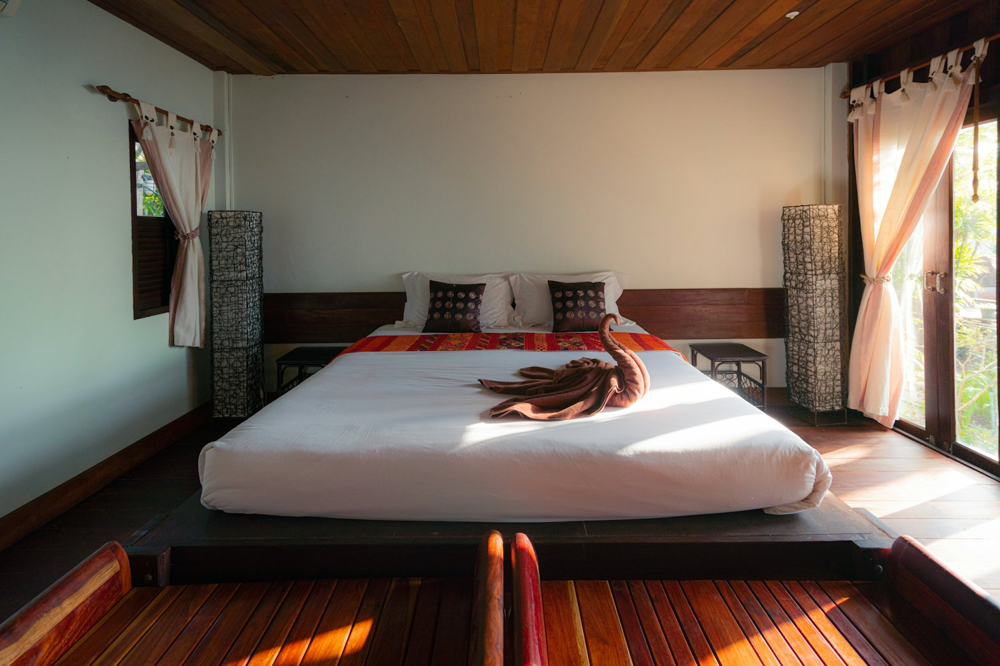
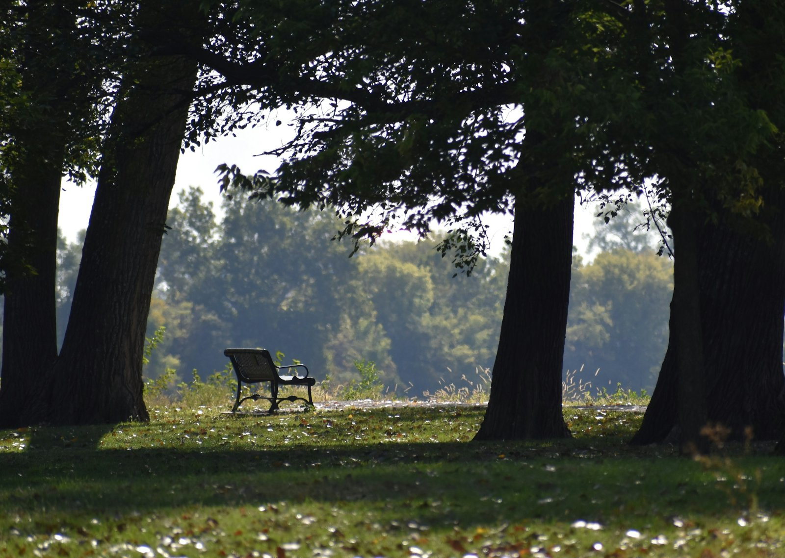
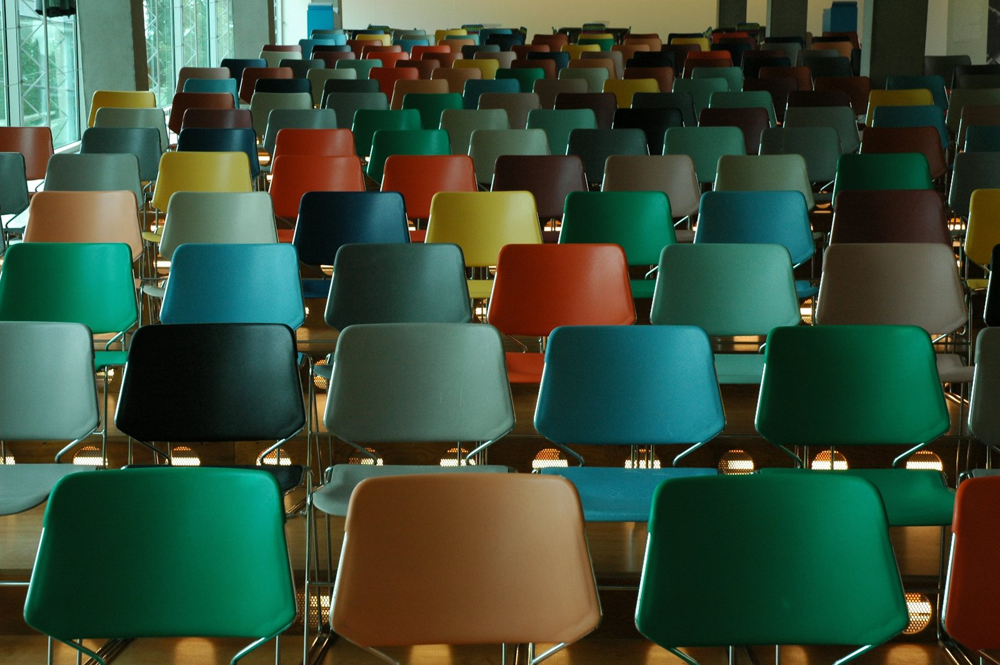
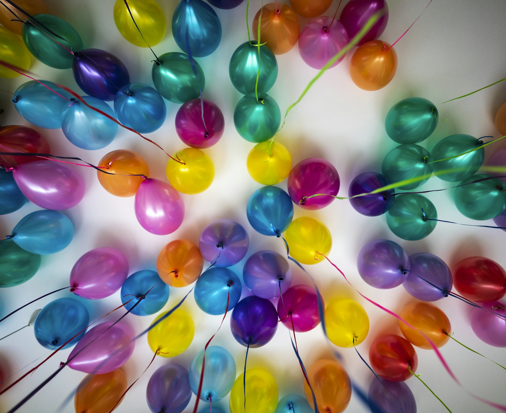
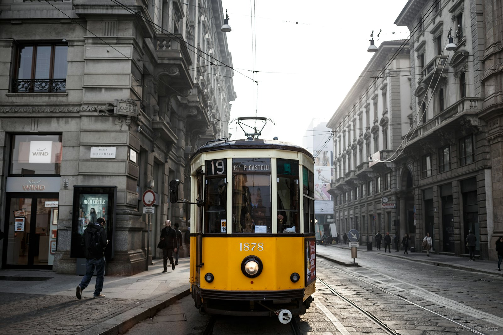

Chiunque tu sia e qualsiasi sia la tua storia, qui sei benvenuto. Una casa a Milano, tra Niguarda e Bicocca.
Diciannove camere, due sale, una sala studio, le terrazze e un parco privato. Sposta il tram lungo la giornata e guarda chi c'è.
Camere singole e doppie, ognuna con il suo bagno e una grande finestra sul parco.


Due sale polivalenti per corsi, riunioni e presentazioni, e una sala studio aperta a chi abita qui.

Il palinsesto è una proposta: è così che una struttura diventa un posto del quartiere.
Prenota una salaLe sale si allestiscono come vuoi tu. Che festa è?
Scegli, e la sala si prepara.
Chiedi la disponibilità
Per diventare un posto del quartiere serve un segno semplice, da mettere su una porta, una chiave, un post. Questa è la proposta.

Si arriva così.